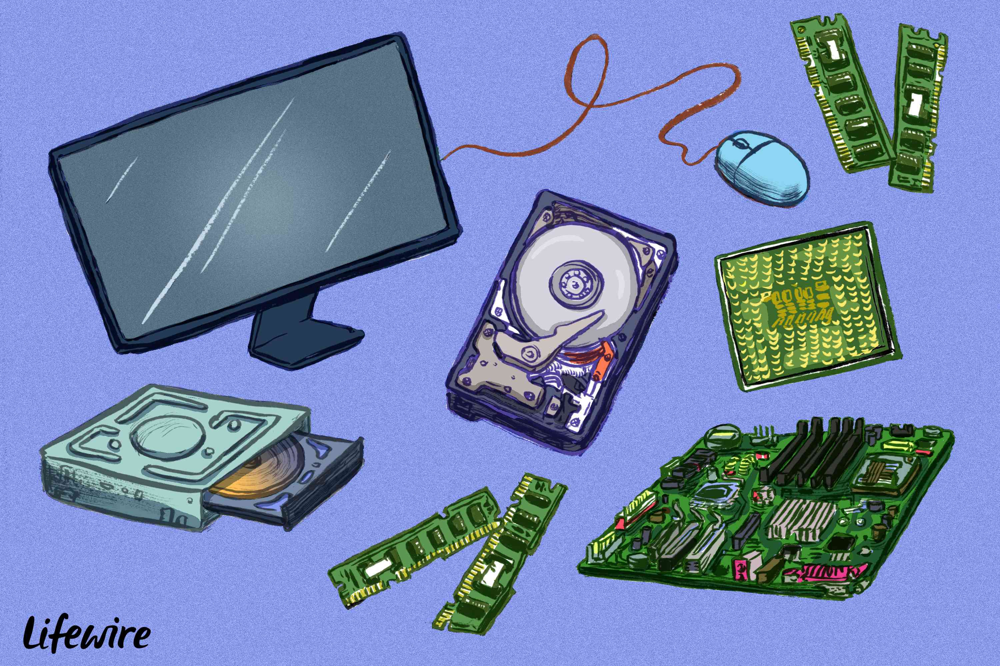

A) Similar to memory cards in that information is stored on a chip and not on a disk
B) The big flat board that all components of the computer are connected to
C) Takes information from the sound card and presents audio information
D) This device takes data from RAM and converts it to a signal that can be output over a speaker system
